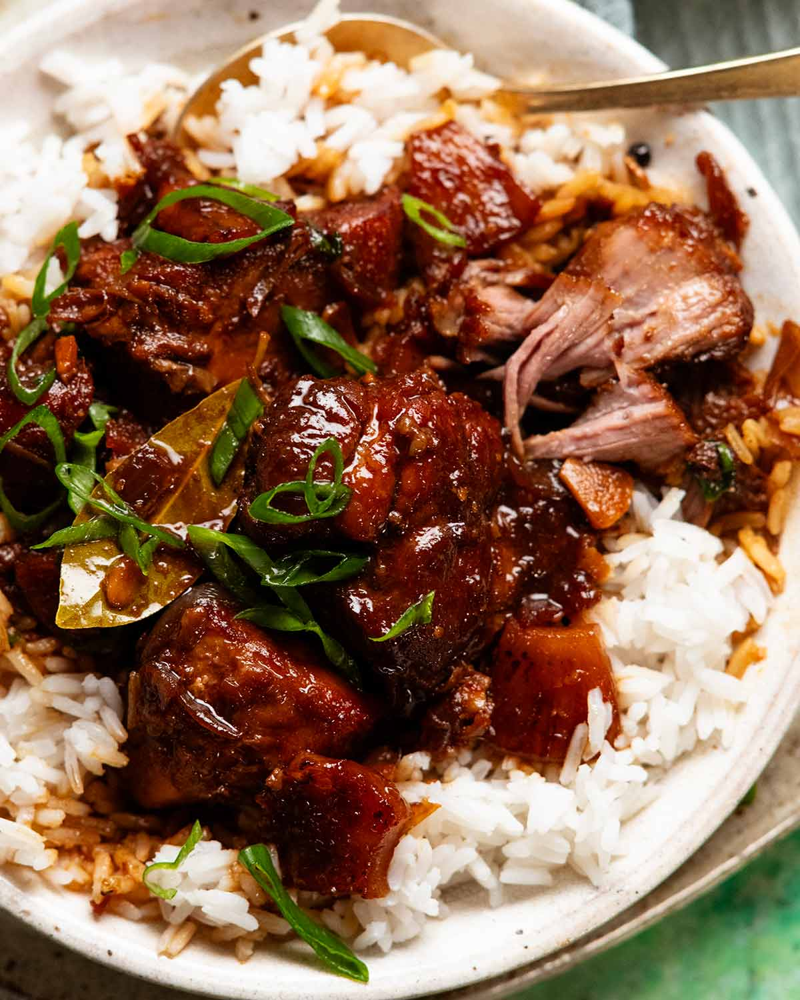

Filipino Pork Adobo

Food Description
👉 Savoury, tangy, slightly garlicky — arguably the national comfort food.
Food Ingredients:
- 1 kg pork (cut pieces)
- ½ cup soy sauce
- ½ cup vinegar
- 6 cloves garlic (crushed)
- 2 bay leaves
- 1 tsp peppercorns
- 1 cup water
The Steps:
- Combine pork, soy sauce, and garlic. Marinate 30 mins (optional but better).
- Put pork and marinade into pot.
- Add vinegar, water, bay leaves, and peppercorns.
- Simmer 30–40 minutes until pork is tender.
- Optional: reduce sauce longer for stronger flavour.
- Serve with rice.
Home Page